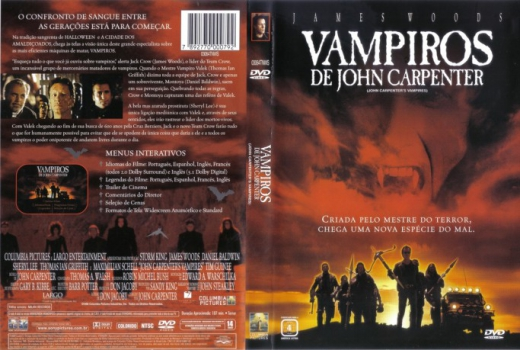

Vampiros de John Carpenter (1998)


Do mestre do terror surge uma nova geração do mal.

Avaliação (IMDb):


6.1/10 (63K votos)
Avaliação (Usuário):
Outro Título:Vampires
País:United States, 108 minutos
Idiomas falados:Espanhol, Francês, Inglês, Português
Gênero(s):Ação, Fantasia, Terror
Diretor(s):John Carpenter
Codec:MPEG-2 (DVD)
Número: 5453
Sinopse:
Uma equipe de caçadores de vampiros declara guerra contra os seguidores de um vampiro mestre que quer o segredo para os vampiros poderem andar à luz do dia.
Elenco:
James Woods, Daniel Baldwin, Sheryl Lee, Thomas Ian Griffith, Maximilian Schell, Tim Guinee, Mark Boone Junior, Gregory Sierra, Cary-Hiroyuki Tagawa, Thomas Rosales Jr.
Tipo de mídia: DVD R/RW,
Legendas: Espanhol, Francês, Inglês, Português, Sem Legendas
Alugado: Não
Tela: Anamorphic Widescreen